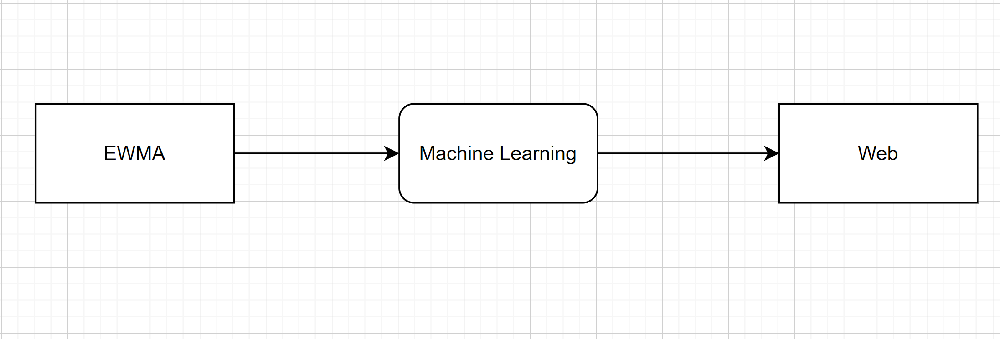
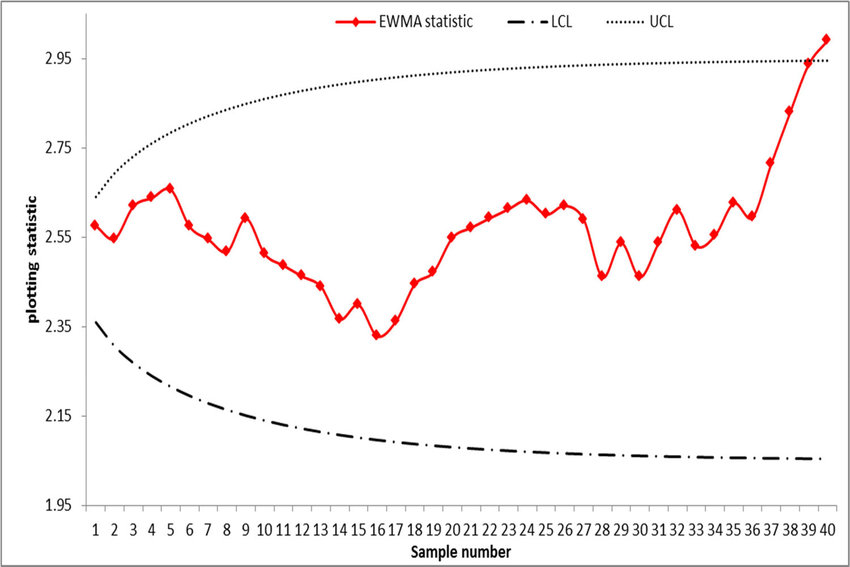
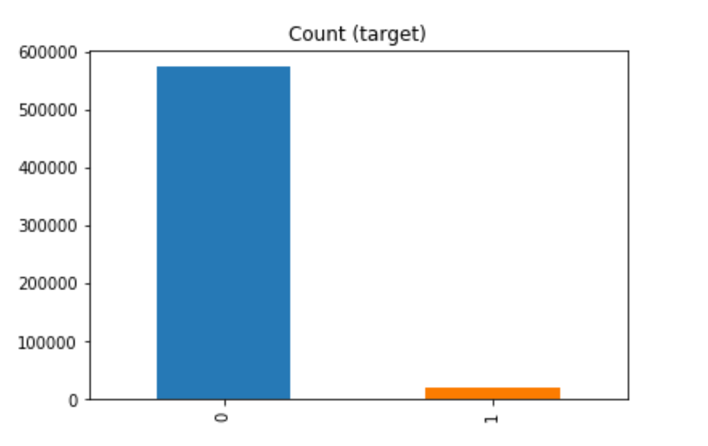
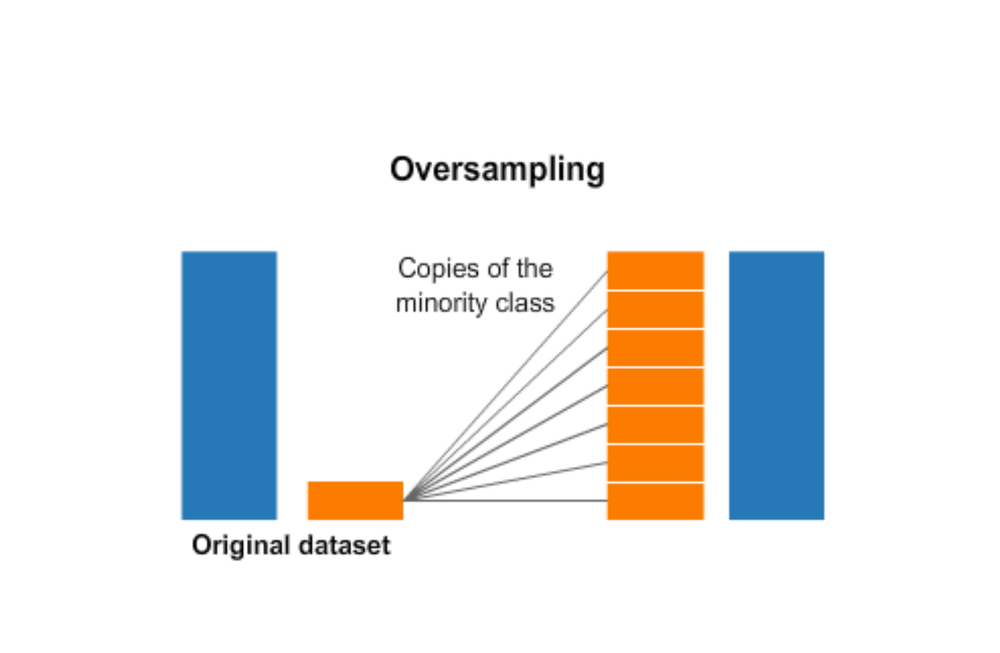

Baseline Shift Dectection with Intel
A little back story behind the project. The internship at Intel was my first real job ever. I have been in love with machine learning for a long time then, however, applying my knowledge at one of the biggest chip manufacturing cooperation in the world is a hold new experience.
After 3 interview rounds, I got into Intel with great excitement. Working with the testing team, after a few months, I was lucky enough to be appointed to lead the machine learning aspect of the project.
My job is to research, implement and help understand the output of the model. Data preprocessing and transformation is also an essential part of the problem.
The following is my recommendation letter after the project here
Due to the confidential nature of the project, the majority of details are not disclosable. I can only brief about the scope and some problems encountered along the way.
Problem statement
To manufacture a chip for any device, hundreds up to thousands of machinery must be involved. And due to the nature of chip making, these machines can be located across the world, usually, a processor can travel up to 4 to 5 countries to finally end up on the user’s hand.
Un-noted failure in any of these constantly working machines can be devastating. There is a need for a system that can early detect failures in real-time, and apply root cause detection to reduce debugging time.
Solution outline
After much consideration, we landed on the following solution:
- EWMA for real-time anomaly detection
- Machine learning ( Decision Tree ) for applying commonality analysis
- Web hosting

The solution seems relatively simple, however, the devil is in the detail. We have to consider multiple factors within the huge Intel environment. Select the combination of solutions that fit the system the best and build a pipeline that is easy to maintain and use are essential.
At the manufacturing line, processors are handle in batches, therefore hundreds of chips go through the same operations and machinery. Therefore to perform commonality analysis,
- We can use an algorithm to detect defective processors
- Combines with the normal processors within the same batch,
- Use machine learning to fit the dataset
- Perform commonality analysis on the model
1. EWMA
EWMA ( Exponentially Weighted Moving Average ) is a tool for monitoring small to moderate variations in the quality characteristics in production lines of manufacturing industries

At first, many solutions are considered for the project. Anomaly detection algorithms like Isolation Forest were first promoted by myself and others. However, the test engineering team was not comfortable using a system that they are not familiar with. Therefore, we decided to use EWMA, since they are more common within Intel’s environment to detect the anomaly.
...
2. Machine learning
Most of my work is laid within this section and can be divided into 5 phases, each has its own challenges:
- Adapt to use Intel’s system and database
- Exploratory data analysis
- Model selection
- Solution to problems and hyperparamter tunning
- Build pipeline for web hosting
2.1 Adapt to use Intel’s system and database
Intel is a multinational company with a complicated system. Study the company’s environment is essential for not only understanding the data source but also helpful later on when integrating the project into the massive system.
Another challenge within this section is the fact that we were working with big data. A full dataset usually goes up to the thousands in the number of features and hundreds of thousand rows. A query can take up to hours and contain gigabytes of data. Therefore, we were forced to be strategic on how we query data for exploratory analysis and model testing.
2.2 Exploratory data analysis
The exploratory analysis process assisted us in gaining more insight into the dataset, the followings are some interesting analyses related to the project.
The most important figure of the dataset that needed to be known is that proportion of defects and non-defects is significantly imbalanced.
This is due to the nature of the problem, at a well-tuned manufacturing line defects are rare, within a given batch, the failure rate is about 1 in 1,000 ( 0.1 %)
An unexpected problem that we also encounter was that some entities have not being updated daily, the frequency that we wanted to run the system on. Also, the data of some entities were missing altogether. To get this fix, we have to work with the data engineer team from the regional department.
2.3 Model selection
There is a wide range of models that were proposed, we landed down mostly around tree-related machine learning methods. We plan to train them, then extract the most significant indicators from the thousands of features.
- Random Forest
- Gradient Boosting Machine
- Decision Tree
- Chi-square Test
2.3.1 Reasons why Decision Tree:
We are mostly lean toward the more complex and powerful model, like Random Forest or Gradient Boosting Machine. However, again after talking to other engineers, interestingly a decision was made to choose Decision Tree to be our final model.
An important lesson can be learned here. The decision tree won this selection simply due to its interpretability, ease to understand. Talking with engineers, a fact immersed that most engineers do not feel comfortable working with something they can not understand. Random forest or GBM is more or less a black box almost impossible to understand from an electrical professional respective, which are the end-users. Building a system to suggest root-cause, trusts needed to be established.
2.3.2 Pros of Decision Tree:
There are multiple reasons that the decision tree “fit” this problem:
- Easy to interpret, visualize a tree is extremely helpful for the user to understand how and why the model makes a decision. Looking at why a tree is slipt from the familial entity, what they work with every day, builds confidence in the final result.
- Minimal preprocessing and no normalization. By keeping data's original form and range, decision trees provided a way for users to dive into the raw dataset and example them without much confusion.
- Handle missing data. As mention before, we still having some problems with missing due to the nature of the system, having a model that can work with missing data is a big advantage.
2.3.3 Cons of Decision Tree:
- The model is notorious for its high risk of overfitting, stories of decision trees work very well academically then struggle in the real world due to noise are common.
- Imbalance bias is the biggest problem. Interestingly, we observed the same issue in the EDA step. Our data are heavily imbalanced, contain largely normal units, and defective are rare.
2.4 Solution to problems and hyperparamter tunning
- To solve the route block of imbalance bias, we landed on the solution call oversample. Oversampling is a technique of randomly sample the minority class to make to ratio balance again. 
- Overfitting is a major problem that we had been having until then. Not only from the nature of the model but also the oversampling technique that was employed. Hyperparameter tuning is an obvious answer, however, because different products go through different operations, and every operation generates a different dataset. This spark variation in features for individual products. Therefore, there are no prefix hyperparameters that we can set for every use case.
However, the oversampling technique has its drawbacks (no free lunch), since we are reusing the minority class, the presence of duplicate records can cause overfitting.
Our solution for this problem is to tune some hyperparameters that work well in most case and train the end-user to adjust other as they go.Grid search and random search were considered, however, these two options were too time-consuming, especially with big data. We do aware that the answer is not perfect, but it is the only way we can account for all use cases. The process went smoothly, and most engineers can tune the model within a few tries
2.5 Build pipeline for web hosting
A complete pipeline was built using Python and embedded SQL. We tried to make the function and class and variable as straightforward as possible for later maintenance.
3. Web hosting
The final pipeline was passed to a web-developing team to host and build an interactive front end. We also work closely with them to help integrate, provide input, and test the system.